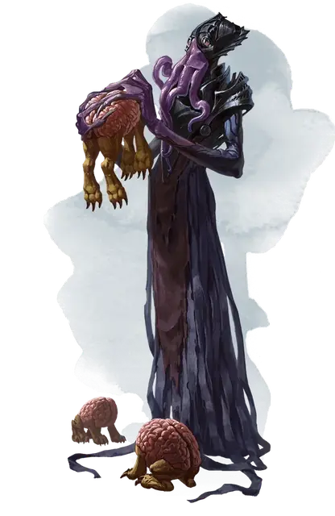

Найхилюр
Nihiloor
Средняя Аберрация, законно-злая, именной НИП

Класс Доспеха 15 (кираса)
Хиты 71 (13к8 + 13)
Скорость 30 футов
| мод | спас | ||
|---|---|---|---|
| СИЛ | 11 | +0 | +0 |
| ЛОВ | 12 | +1 | +1 |
| ТЕЛ | 12 | +1 | +1 |
| мод | спас | ||
|---|---|---|---|
| ИНТ | 19 | +4 | +7 |
| МДР | 17 | +3 | +6 |
| ХАР | 17 | +3 | +6 |
Навыки Восприятие +6, Магия +7, Обман +6, Проницательность +6, Скрытность +4, Убеждение +6
Чувства тёмное зрение 120 футов, пассивное Восприятие 16
Языки Глубинная речь, Подземный, Телепатия 120 фт.
Опасность 7 (2900 опыта)
Бонус мастерства +3
Особенности
Сопротивление магии. Найхилюр совершает с преимуществом спасброски от заклинаний и прочих магических эффектов.
Врождённое колдовство (псионика). Базовой характеристикой Найхилюра является Интеллект (Сл спасброска от заклинания 15). Он может накладывать следующие заклинания, не нуждаясь ни в каких компонентах:
• Неограниченно: левитация [Levitate], обнаружение мыслей [Detect thoughts]
• 1/день каждое: подчинение чудовища [Dominate monster], уход в иной мир [Plane shift] (только на себя)
Свежеватель разума заклинатель. Некоторые свежеватели разума дополняют свою псионическую силу магическими заклинаниями. Однако другие иллитиды воспринимают их как психически больных и стараются избегать. Свежеватель разума заклинатель обладает показателем опасности 8 (3900 опыта) и имеет следующую особенность:
Использование заклинаний. . Свежеватель разума является заклинателем 10-го уровня. Его базовой характеристикой является Интеллект (Сл спасброска от заклинания 15,+7 к попаданию атаками заклинаниями). У него подготовлены следующие заклинания волшебника:
• Заговоры (неограниченно): волшебная рука [Mage hand], защита от оружия [Blade ward], пляшущие огоньки [Dancing lights], электрошок [Shocking grasp]
• 1 уровень (4 ячейки): маскировка [Disguise self], обнаружение магии [Detect magic], усыпление [Sleep], щит [Shield]
• 2 уровень (3 ячейки): размытый образ [Blur], луч слабости [Ray of enfeeblement], невидимость [Invisibility]
• 3 уровень (3 ячейки): молния [Lightning bolt], подсматривание [Clairvoyance], послание [Sending]
• 4 уровень (3 ячейки): мираж [Hallucinatory terrain], смятение [Confusion]
• 5 уровень (2 ячейки): силовая стена [Wall of force], телекинез [Telekinesis]
свежеватель разума псион. Свежеватели разума иногда посвящают себя глубокому изучению псионической силы, и многие из них выделяются использованием врожденной псионической энергии для дублирования заклинаний. У свежевателя разума псиона те же характеристики, что и у свежевателя разума, за исключением того, что их уровень опасности 8 (3,900 опыта) и они имеют следующие особенности:
Врожденное колдовство (Псионика). Свежеватель разума – заклинатель 10-го уровня. Его врожденное колдовство основано на Интеллекте (спасбросок Сл 15; +7 к попаданию заклинаниями) и он может колдовать следующие заклинания без использования компонентов:
• Неограниченно: указание [Guidance], волшебная рука [Mage hand], злая насмешка [Vicious mockery], меткий удар [True strike]
• 1 уровень (4 ячейки): очарование личности [Charm person], приказ [Command], понимание языков [Comprehend languages], убежище [Sanctuary]
• 2 уровень (3 ячейки): корона безумия [Crown of madness], воображаемая сила [Phantasmal force], видение невидимого [See invisibility]
• 3 уровень (3 ячейки): подсматривание [Clairvoyance], ужас [Fear], слияние с камнем [Meld into stone]
• 4 уровень (3 ячейки): смятение [Confusion], изменение формы камня [Stone shape]
• 5 уровень (2 ячейки): наблюдение [Scrying], телекинез [Telekinesis]
Действия
Щупальца. Рукопашная атака оружием: +7 к попаданию, досягаемость 5 футов, одно существо. Попадание: Урон психической энергией 15 (2к10 + 4). Если размер цели не больше Среднего, она становится схваченной (Сл высвобождения равна 15) и должна преуспеть в спасброске Интеллекта Сл 15, иначе станет ошеломленной, пока не перестанет быть схваченной.
Извлечение мозга. Рукопашная атака оружием: +7 к попаданию, досягаемость 5 футов, один недееспособный гуманоид, схваченный свежевателем разума. Попадание: Цель получает колющий урон 55 (10к10). Если этот урон уменьшает хиты цели до 0, свежеватель разума убивает цель, извлекая и пожирая её мозг.
Взрыв сознания (перезарядка 5–6). Свежеватель разума магическим образом испускает психическую энергию 60-футовым конусом. Все существа в этой области должны преуспеть в спасброске Интеллекта Сл 15, иначе получат урон психической энергией 22 (4к8 + 4) и станут ошеломленными на 1 минуту. Существо может повторять этот спасбросок в конце каждого своего хода, оканчивая эффект на себе при успехе.
Описание
Этот иллитид работает на Занатара. Он целыми днями создаёт пожирателей интеллекта и выпускает их в канализацию Глубоководья. Каждый пожиратель атакует первого же встречного гуманоида и превращает жертву в марионетку, которая шпионит в городе и передаёт сведения Найхилюру. Иногда пожирателю приказывают захватить конкретную цель, например сотрудника Городской гвардии или Городской стражи. Порой же твари приказывают схватить конкретного жителя Глубоководья и доставить в Скалпорт, где жертву продают в рабство или отпускают за выкуп.
Разум Найхилюра чужд всему человеческому. Себя он считает равным Занатару. Однако он не намерен бунтовать против бехолдера и предпочитает воплощать свои планы в его тени.